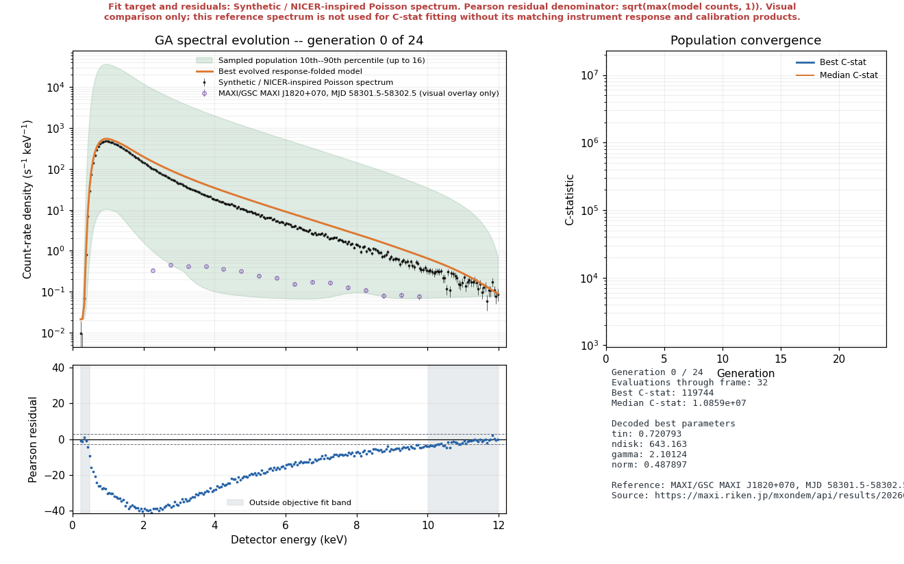
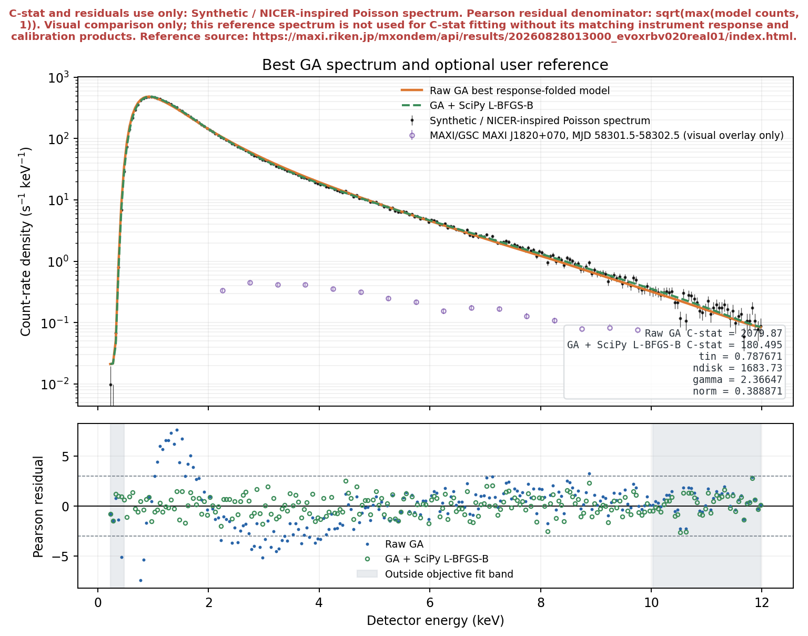

Introduction
The first EvoXRB post ended with a sentence I liked:
You can watch the search happen.
There was only one small problem.
You could not actually watch the search happen.
The code saved convergence histories, population spreads and final figures, which is enough to reconstruct what the genetic algorithm did after the event. It was rather like receiving a detailed report from an expedition while being told that the windows on the vehicle were an optional feature planned for the next release.
Version 0.2.0 adds the windows.
Every evaluated generation can now emit an immutable snapshot of the population. That snapshot is converted back into astrophysical parameters, folded through the synthetic detector response and drawn against the same Poisson counts used by the objective.
The result can update live while the calculation runs, or it can be saved as a replay with play, pause, step, loop and timeline controls.
This sounds like a presentation feature.
It is.
It also turned out to be a very useful way of finding out whether the algorithm was doing what I thought it was doing.
1. What actually changed in v0.2.0?
The optimiser itself remains a real-valued genetic algorithm. There is no prerecorded sequence pretending to evolve and no random curve being nudged towards the answer for dramatic effect.
A population still passes through tournament selection, simulated-binary crossover, bounded polynomial mutation, elitism and occasional random immigration. Every candidate is decoded into physical parameters and evaluated with the response-folded Poisson objective.
The difference is that the optimiser now reports its state after generation zero and after every newly evaluated generation.
Each snapshot contains:
- the normalized population and its scores,
- the best genes and decoded parameters,
- the best and median C-statistic,
- gene spread and boundary hits,
- the evaluation count, seed and stopping state.
The arrays are copies and are read-only. A plot is allowed to observe evolution. It is not allowed to reach back into the gene pool and improve its favourite organism by hand.
That would be less natural selection and more suspiciously interventionist gardening.
2. The experiment, now with moving parts
The replay contains generation zero followed by twenty-four evolved generations from the E08 smoke-profile run. It starts paused, because a scientific figure should not begin moving merely because somebody opened it.

Open the interactive animationThe top-left panel contains the synthetic count-rate spectrum, the best response-folded model and a sampled 10th--90th percentile envelope from the population. Purple open circles add the real MAXI/GSC spectrum on its own 2--10 keV energy grid. The envelope is not a posterior interval, and the purple points are not extra fitness data. They are two different kinds of context sharing one axis.
The lower-left panel shows Pearson residuals for the synthetic target and synthetic model only, with the channels outside the 0.5--10 keV objective band shaded. The purple MAXI/GSC points do not enter this panel. Their raw separation from a NICER-inspired model is not a model residual, because the two instruments do not share a response.
The top-right panel follows the best and median C-statistic. Watching both matters. A single champion can improve while the rest of the population remains scattered across several bad regions.
The final panel decodes the current champion into Tin, Ndisk, Γ and K. This connects movement in the objective to movement in the model rather than leaving the animation as an abstract falling line.
3. Is this a real genetic algorithm?
Yes.
That question deserves a direct answer because optimisation animations are very easy to fake. Interpolating between a bad spectrum and a good spectrum would produce something smooth, attractive and completely unrelated to the population that was evaluated.
The v0.2.0 path is less elegant and more honest:
The plotted spectrum for generation g is recalculated from the best genes stored for generation g. Population curves are recalculated from the population history. The score plot comes from the corresponding score history.
Everything in one frame therefore refers to the same evaluated state.
This is a surprisingly easy invariant to lose once plotting code becomes enthusiastic.
4. What did this particular run show?
The demonstration uses the smoke profile: 32 individuals, 24 generations and 800 objective evaluations including the initial population.
The raw GA did not converge. It reached the smoke profile's generation limit with a best C-statistic of 2079.873.
That is not a minor technicality hidden in a metadata file. It is the result.
The raw champion was in the correct general part of parameter space, but it had not resolved the strong trade-off between disk temperature, disk normalization, photon index and continuum normalization.
| Stage | Tin | Ndisk | Γ | K | C-stat |
|---|---|---|---|---|---|
| Synthetic truth | 0.650 | 8000 | 2.150 | 0.270 | -- |
| Raw 24-generation GA | 0.78767 | 1683.73 | 2.36647 | 0.388871 | 2079.873 |
| GA + SciPy L-BFGS-B | 0.648885 | 8060.95 | 2.15046 | 0.269375 | 180.495 |
Bounded SciPy L-BFGS-B then used the GA champion as its starting point and reached C-stat 180.495. The polished parameters lie extremely close to the injected values.
This does not prove that the GA defeated SciPy.
It proves that a global population can supply a basin and a local method can finish the numerical sentence much more efficiently than asking mutation to place the final decimal points.
5. The static comparison is still important
An animation is good at showing a process. It is less good at supporting a careful final comparison because the evidence keeps changing while you are trying to look at it.
So v0.2.0 also saves a static figure containing the synthetic target, the raw GA model, the SciPy-polished model, both sets of synthetic residuals and the real MAXI/GSC reference as purple open circles.

The residual denominator is
The fit itself continues to use the Poisson C-statistic. The residuals are a diagnostic view, not a second objective quietly introduced after the calculation.
6. Where does real data enter?
This is the section where it would be very easy to overstate what changed.
This replay includes an official real MAXI/GSC spectrum of MAXI J1820+070 from the MAXI on-demand processing result. It covers MJD 58301.5--58302.5, close to the E08 reference date, with 1539.5 seconds of exposure and 16 half-keV bins across 2--10 keV.
The selected band contains 3004 source-region counts and 330 background-region counts. The background is scaled by exposure and BACKSCAL, and Poisson errors from the source and scaled background are propagated into the plotted count-rate-density uncertainty.
The publication bundle includes the derived reference CSV and its provenance record. Those files preserve the route from the official result to the sixteen purple open circles rather than asking a caption to carry the entire chain of custody.
But the real spectrum remains a visual overlay only. The synthetic target is what the GA and bounded SciPy L-BFGS-B fit. MAXI/GSC values are never passed into the Poisson objective, never change selection, and never appear in the Pearson residual calculation.
The reference makes the comparison real. The boundary around what was fitted makes it accurate.
Acknowledgment: This research has made use of MAXI data provided by RIKEN, JAXA and the MAXI team.
7. Live calculation and saved replay are different jobs
The live viewer is attached directly to the generation callback. On a desktop Matplotlib backend it updates the current spectrum and residuals while the optimiser is still calculating.
The saved replay is built from the completed, persisted history. It works in a headless environment and can be exported as self-contained HTML, GIF through Pillow, or MP4 when FFmpeg is available.
The two paths deliberately share the same spectral calculations, but they solve different problems.
- Live mode answers: what is the optimiser doing now?
- The saved replay answers: what exactly did this run do?
The website compiler takes the saved HTML one step further. It extracts the embedded PNG frames, moves behaviour into external JavaScript, adds labels and keyboard controls, starts paused and publishes the player as a standalone page linked from this post.
Scientific Python is very good at making figures.
It is not automatically good at making those figures behave politely inside somebody else's website.
8. Checkpointing without accidentally changing the experiment
A long GA should be resumable. It should not be resumable against different data while pretending nothing changed.
Each animated fit therefore creates an objective signature covering the configuration, continuum choice, target counts, exposure, fit mask, response energy grids and bin edges, effective area, redistribution matrix and background.
A signed checkpoint can only resume when the caller supplies the same signature.
This is intentionally conservative. Reusing a population is easy. Reusing its cached scores after changing the response is wrong.
The output summary records both the configuration digest and objective signature, while the public website metadata removes absolute workstation paths.
Reproducibility is not improved by publishing the name of my Windows user directory.
9. Running the experiment
From the repository root:
python -m pip install -e ".[test]"
python -m evoxrb animate --profile smoke --epoch E08To watch the calculation live:
python -m evoxrb animate --profile smoke --epoch E08 --liveTo add the published MAXI/GSC reference:
python -m evoxrb animate \
--profile smoke \
--epoch E08 \
--reference-csv data/reference/maxi_j1820p070_mjd58302.csvAnd to rebuild this copy-ready website bundle from the generated replay:
python -m evoxrb animate --profile smoke --epoch E08 --reference-csv data/reference/maxi_j1820p070_mjd58302.csv --output results/animations/E08_ga_spectra.html --comparison-output results/animations/E08_ga_comparison.png
python scripts/build_blog_bundle.py
python -m http.server 8000 --directory website/evoxrb-v0.2.0The site uses relative paths and no remote runtime dependencies. Copy the entire website/evoxrb-v0.2.0 directory into a static host and the article, player, frames, comparison image, metadata and LaTeX source travel together.
10. So, did adding an animation improve the science?
Did it make the raw smoke-profile GA converge?
No.
Did it make the algorithm look more competent than the numbers say it was?
Also no. The structured residuals are now much harder to ignore.
Did it make the relationship between population search, parameter degeneracy and local polishing easier to understand?
Yes.
Did it create a sensible interface for placing an actual reference spectrum next to the synthetic experiment without quietly pretending that the educational response calibrated it?
Yes.
The next important step is still the same one identified in Part I: increase the difficulty of the likelihood landscape and eventually replace the synthetic products with a properly reduced observation and its matching calibration files.
But v0.2.0 makes the intermediate experiment observable.
That matters because optimisation is not only a machine for producing a final row of parameters.
It is a process.
And processes are much easier to trust when they are allowed to leave evidence.
11. References and further reading
- Seifi, S. EvoXRB: Genetic Algorithms, and a Very Real Black Hole (2026). Part I.
- Cash, W. Parameter estimation in astronomy through application of the likelihood ratio, Astrophysical Journal 228, 939 (1979). NASA NTRS record.
- SciPy documentation. Bounded L-BFGS-B minimisation.
- Matplotlib documentation. Animation API and writer classes.
- NASA HEASARC. NICER analysis documentation.
- Matsuoka, M. et al. The MAXI Mission on the ISS: Science and Instruments for Monitoring All-Sky X-Ray Images, Publications of the Astronomical Society of Japan 61, 999 (2009). ADS record.
- MAXI on-demand processing. MAXI J1820+070 result for MJD 58301.5--58302.5.